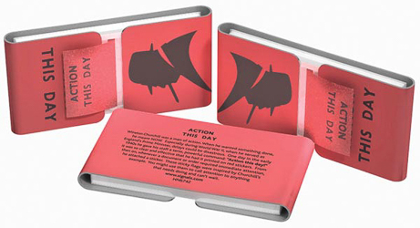

Letter to Winson Churchill
Prime Minister only
Hut 6 and Hut 8
21st October 1941
Some weeks ago you paid us the honour of a visit, and we believe that
you regard our work as important. You will have seen that, thanks
largely to the energy and foresight of Commander Travis, we have been
well supplied with the ‘bombes’ for the breaking of the German Enigma
codes. We think, however, that you ought to know that this work is being
held up, and in some cases is not being done at all, principally because
we cannot get sufficient staff to deal with it. Our reason for writing
to you direct is that for months we have done everything that we
possibly can through the normal channels, and that we despair of any
early improvement without your intervention. No doubt in the long run
these particular requirements will be met, but meanwhile still more
precious months will have been wasted, and as our needs are continually
expanding we see little hope of ever being adequately staffed.
We do not wish to burden you with a detailed list of our difficulties, but the following are the bottlenecks which are causing us the most acute anxiety.
1. Breaking of Naval Enigma (Hut 8)
Owing to shortage of staff and the overworking of his present team the Hollerith section here under Mr Freeborn has had to stop working night shifts. The effect of this is that the finding of the naval keys is being delayed at least twelve hours every day. In order to enable him to start night shifts again Freeborn needs immediately about twenty more untrained Grade III women clerks. To put himself in a really adequate position to deal with any likely demands he will want a good many more.
A further serious danger now threatening us is that some of the skilled male staff, both with the British Tabulating Company at Letchworth and in Freeborn’s section here, who have so far been exempt from military service, are now liable to be called up.2. Military and Air Force Enigma (Hut 6)
We are intercepting quite a substantial proportion of wireless traffic
in the Middle East which cannot be picked up by our intercepting
stations here. This contains among other things a good deal of new
‘Light Blue’ intelligence. Owing to shortage of trained typists,
however, and the fatigue of our present decoding staff, we cannot get
all this traffic decoded. This has been the state of affairs since
May. Yet all that we need to put matters right is about twenty trained
typists.
3. Bombe testing, Hut 6 and Hut 8
In July we were promised that the testing of the ‘stories’ produced by the bombes would be taken over by the WRNS in the bombe hut and that sufficient WRNS would be provided for this purpose. It is now late in October and nothing has been done. We do not wish to stress this so strongly as the two preceding points, because it has not actually delayed us in delivering the goods. It has, however, meant that staff in Huts 6 and 8 who are needed for other jobs have had to do the testing themselves. We cannot help feeling that with a Service matter of this kind it should have been possible to detail a body of WRNS for this purpose, if sufficiently urgent instructions had been sent to the right quarters.4.
Apart altogether from staff matters, there are a number of other
directions in which it seems to us that we have met with unnecessary
impediments. It would take too long to set these out in full, and we
realise that some of the matters involved are controversial. The
cumulative effect, however, has been to drive us to the conviction that
the importance of the work is not being impressed with sufficient force
upon those outside authorities with whom we have to deal.
We are, Sir, Your obedient servants,
A M Turing
W G Welchman
C H O’D Alexander
P S Milner-Barry
Churchill’s Response
 “Action this day. Make sure they have all they want on extreme priority and report to me that this had been done.”